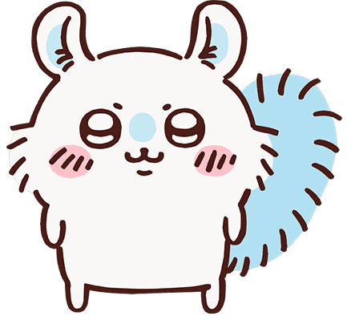

Momonga is a small flying squirrel native to Japan, known for its agility and nocturnal habits. It is a beloved creature in Japanese culture and often features in folklore and stories.
Momongas are known for their ability to glide between trees using a membrane that stretches from their wrists to their ankles. They primarily feed on nuts, fruits, and insects.
Conservation efforts are in place to protect the natural habitats of Momongas, as they face threats from deforestation and urbanization.